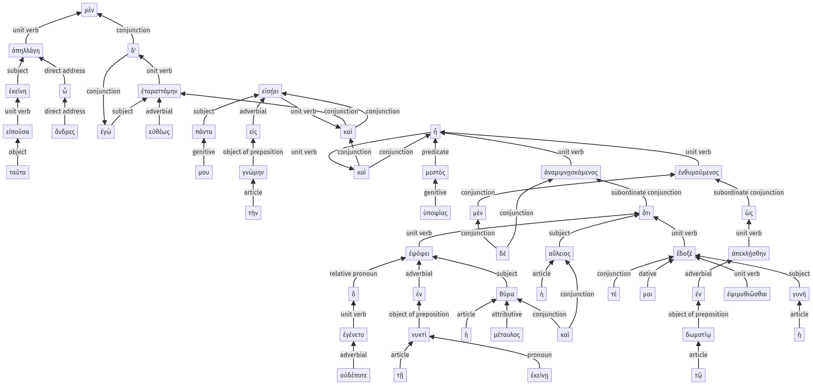

Lysias, Oration 1, 1.17.1-1.17.52a
1.16.51-1.16.55a | 1.17.53-1.17.63a
Sentence 43
1.17.1-1.17.52a
ταῦτα εἰποῦσα, ὦ ἄνδρες, ἐκείνη μὲν ἀπηλλάγη, ἐγὼ δ' εὐθέως ἐταραττόμην, καὶ πάντα μου εἰς τὴν γνώμην εἰσῄει, καὶ μεστὸς ἦ ὑποψίας, ἐνθυμούμενος μὲν ὡς ἀπεκλῄσθην ἐν τῷ δωματίῳ, ἀναμιμνῃσκόμενος δὲ ὅτι ἐν ἐκείνῃ τῇ νυκτὶ ἐψόφει ἡ μέταυλος θύρα καὶ ἡ αὔλειος, ὃ οὐδέποτε ἐγένετο, ἔδοξέ τέ μοι ἡ γυνὴ ἐψιμυθιῶσθαι.
1 ταῦτα εἰποῦσα
1 ὦ ἄνδρες ἐκείνη ἀπηλλάγη
1 ἐγὼ δ' εὐθέως ἐταραττόμην
1 καὶ πάντα μου εἰς τὴν γνώμην εἰσῄει
1 καὶ μεστὸς ἦ ὑποψίας
2 ἐνθυμούμενος μὲν
3 ὡς ἀπεκλῄσθην ἐν τῷ δωματίῳ
2 ἀναμιμνῃσκόμενος δὲ
3 ὅτι ἐν ἐκείνῃ τῇ νυκτὶ ἐψόφει ἡ μέταυλος θύρα καὶ ἡ αὔλειος
4 ὃ οὐδέποτε ἐγένετο
3 ἔδοξέ τέ μοι ἡ γυνὴ
4 ἐψιμυθιῶσθαι
ταῦτα εἰποῦσα, ὦ ἄνδρες, ἐκείνη μὲν ἀπηλλάγη, ἐγὼ δ' εὐθέως ἐταραττόμην, καὶ πάντα μου εἰς τὴν γνώμην εἰσῄει, καὶ μεστὸς ἦ ὑποψίας, ἐνθυμούμενος μὲν ὡς ἀπεκλῄσθην ἐν τῷ δωματίῳ, ἀναμιμνῃσκόμενος δὲ ὅτι ἐν ἐκείνῃ τῇ νυκτὶ ἐψόφει ἡ μέταυλος θύρα καὶ ἡ αὔλειος, ὃ οὐδέποτε ἐγένετο, ἔδοξέ τέ μοι ἡ γυνὴ ἐψιμυθιῶσθαι.
Highlighting:
- connecting words
- unit verb
- subject
- object
Color code:
- Independent clause (level 1, transitive verb)
- Independent clause (level 1, transitive verb)
- Independent clause (level 1, intransitive verb)
- Independent clause (level 1, linking verb)
- circumstantial participle (level 2, transitive verb)
- circumstantial participle (level 2, transitive verb)
- circumstantial participle (level 2, transitive verb)
- subordinate clause (level 3, transitive verb)
- subordinate clause (level 3, intransitive verb)
- subordinate clause (level 3, intransitive verb)
- subordinate clause (level 4, intransitive verb)
- indirect statement with infinitive (level 4, transitive verb)
